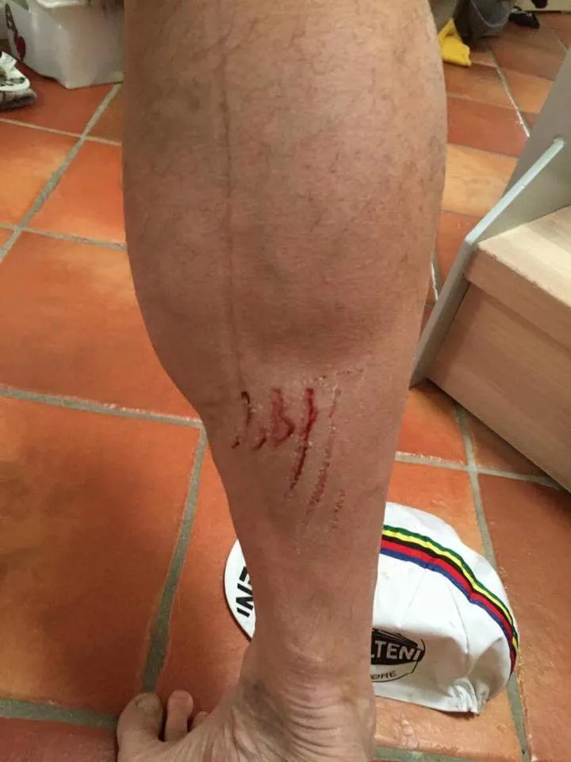

Fantastisk dag ved Farmen CX Cup

Niels Bjørnsteen kæmpede sig til en 4. plads i finalen, mens Grane Maaløe kørte sig til en flot 2. plads i B-finalen ved Farmen CX Cup.
Farmen CX CUP: Forza CX!
Der var et overflødighedshorn af røg, ramper, rock, sand, mudder og kostald med spaltegulv. Der var et orgel, en truck, en svigermor og en grill med skinkestænger.
4 børn og 13 mand stillede til start i et storslået kråssløb rundt om og igennem farmen. Et sjældent ukorrumperet løbs setup bestyret af den velklædte dgi official Peter Meinert. Der blev kørt 2 gange 2 kval.heats gennem lige mængder mudder og mælkesyre.
Finaler og juniortatovering
Efter kvallen stod det klart at Niels med flotte placeringer, der iblandt en første plads var klar til a-finalen og Grane kunne med sin indsats og strategiske kørsel starte i b-finalen.
Efter to hektiske finaler kunne Niels bryste sig af en tæt 4. plads og Grane en 2. Der blev kæmpet hårdt og ingen kamp uden mén, begrebet juniortatovering tages til nye højder og Uci overvejer nu at forbyde cykler med tandhjul i næste års worldtour.

Stor tak til Stefan og Max for at lægge farm til og arrangere hele spetaklet. Vi kommer igen hvis I gør det igen.